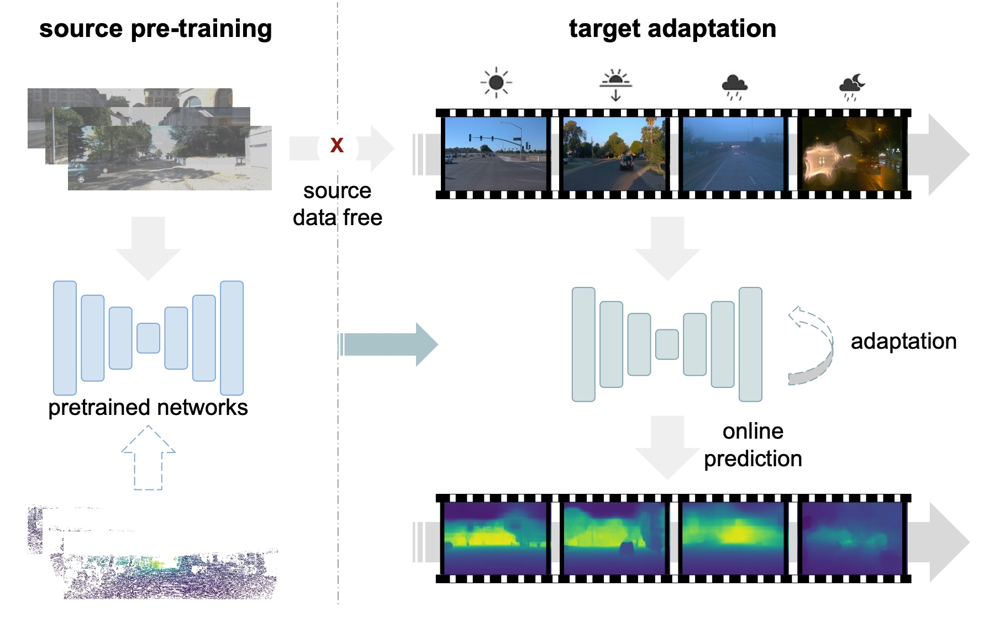
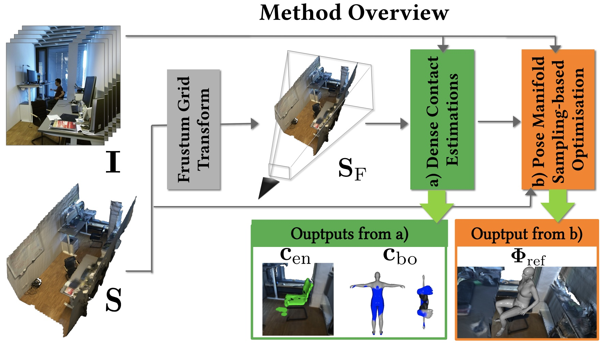
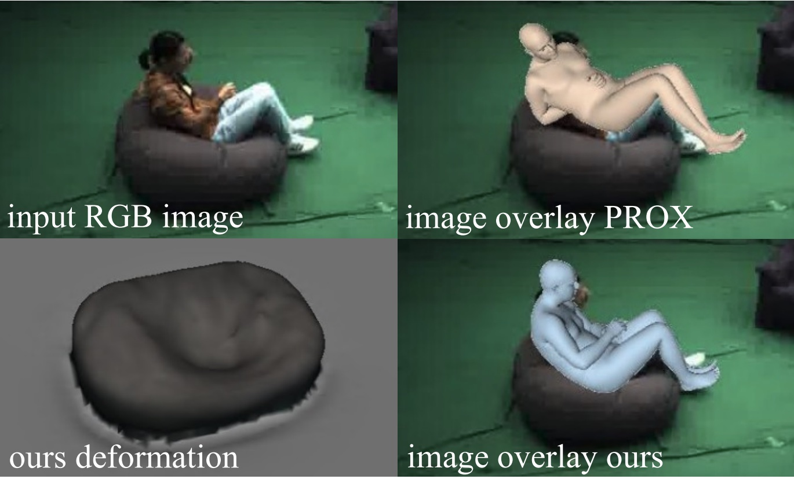
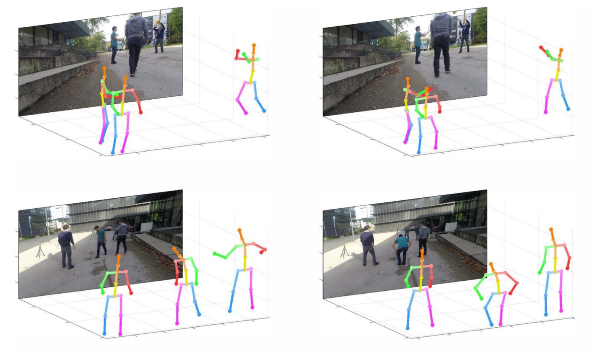
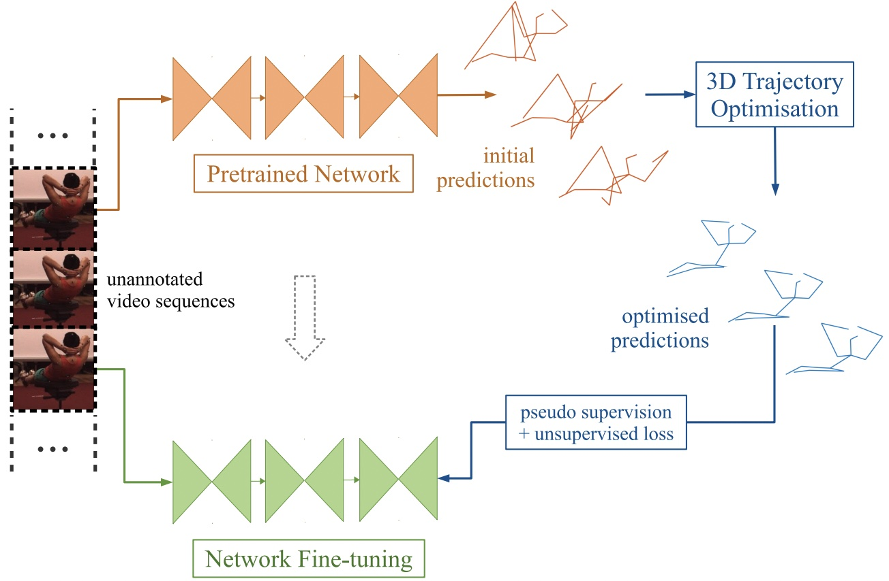

|

|
Test-time Domain Adaptation for Monocular Depth Estimation
Zhi Li,
Shaoshuai Shi,
Bernt Schiele,
Dengxin Dai
ICRA, 2023
A test-time domain adaptation framework for monocular depth estimation that achieves state-of-the-art performance in long-term, ever-changing environments.
|
|

|
HULC: 3D HUman Motion Capture with Pose Manifold SampLing and Dense Contact Guidance
Soshi Shimada,
Vladislav Golyanik,
Zhi Li,
Patrick Pérez,
Weipeng Xu,
Christian Theobalt
ECCV, 2022
A new approach for 3D human motion capture which is aware of the rigid scene geometry.
|
|

|
MoCapDeform: Monocular 3D Human Motion Capture in Deformable Scenes
Zhi Li,
Soshi Shimada,
Bernt Schiele,
Christian Theobalt,
Vladislav Golyanik
3DV, 2022 (Best Student Paper Award)
The first approach for 3D human motion capture making aware of the deformable scene geometry.
|
|

|
Monocular 3D Multi-person Pose Estimation via Predicting Factorized Correction Factors
Yu Guo,
Lichen Ma,
Zhi Li,
Xuan Wang,
Fei Wang
CVIU, 2021
An effective approach for estimating absolute-scale human poses in the challenging multi-person setting.
|
|

|
On Boosting Single-Frame 3D Human Pose Estimation via Monocular Videos
Zhi Li,
Xuan Wang,
Fei Wang,
Peilin Jiang
ICCV, 2019
A semi-supervised approach to improve the performance of 3D human pose estimation on monocular videos.
|
|
{kind=link}